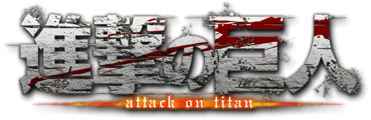

-
Accueil
L'attaque des Titans (Shingeki No Kyojin) a été écrit en 2009 par Hajime Isamaya. Une adaptation animée a été produite par Wit Studio et été diffusée pour la première fois en avril 2013, cette série anime est divisée en 3 saisons actuellement de 25 épisodes pour la première, 12 épisodes pour la deuxième et 22 épisodes pour la troisième et disponible légalement en France sur Wakanim.
Personnages

eren
-
Titre Original: 進撃の巨人
Genre : Action - Drame - Shônen - Surnaturel - Thriller
Écrit par : Hajime Isamaya
Produit par : Wit Studio (Saison 1/2/3), MAPPA (Saison 4)
Synopsis :